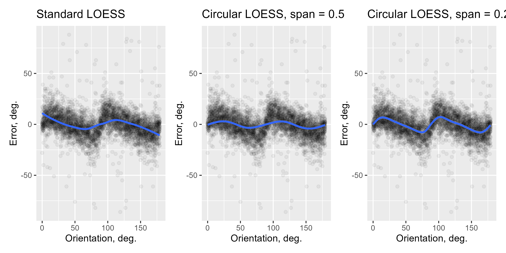

R/functions.R
circ_loess.RdProvides an locally-weighted average when the independent variable is circular and depended variable is linear. Mainly to use with ggplot2.
circ_loess(
formula = NULL,
data = NULL,
angle = NULL,
y = NULL,
xseq = NULL,
circ_space = NULL,
span = 0.75,
...
)the formula, e.g., y ~ x
data to use
a vector of angles (not used if a formula is provided)
dependent variable vector (not used if a formula is provided)
a grid to compute predictions on (optional, the default is to use 500 points spanning the circle)
circular space to use (90, 180, 360, or 2*pi)
a span to adjust the degree of smoothing
other arguments (ignored)
an object of circ_loess class with the following parameters:
angle the angles in the data
y the dependent variable vales in the data
xseq the grid on which the loess values are estimated
y_est the estimated loess values
y_se standard errors
w weights
circ_space circular space used
span span used
Weights for the regression are computed as
\[w = (1-(d/d_{max})^3)^3\]
where d is the angular difference between the point at which the estimate is computed and the angles in the data, and \(d_{max}\) is the maximum possible distance. If span is above 1, all points are included and \(d_{max} = {circ\_space}/(4*span)\). Otherwise, a proportion \(\alpha\) of the points included based on their distance to the point at which the estimate is computed and \(d_{max}\) is the corresponding maximal distance.
p <- ggplot(Pascucci_et_al_2019_data, aes(x = orientation, y = err)) +
geom_point(alpha = 0.05) +
labs(x = "Orientation, deg.", y = "Error, deg.")
p1 <- p + geom_smooth(method = "loess") + ggtitle("Standard LOESS")
p2 <- p + geom_smooth(method = "circ_loess", method.args = list(circ_space = 180, span = 0.5)) +
ggtitle("Circular LOESS, span = 0.5")
p3 <- p + geom_smooth(method = "circ_loess", method.args = list(circ_space = 180, span = 0.2)) +
ggtitle("Circular LOESS, span = 0.2")
(p1 + p2 + p3)
#> `geom_smooth()` using formula = 'y ~ x'
#> `geom_smooth()` using formula = 'y ~ x'
#> `geom_smooth()` using formula = 'y ~ x'
